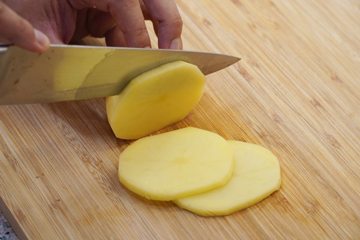
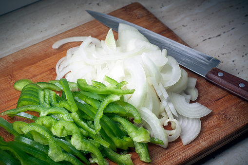
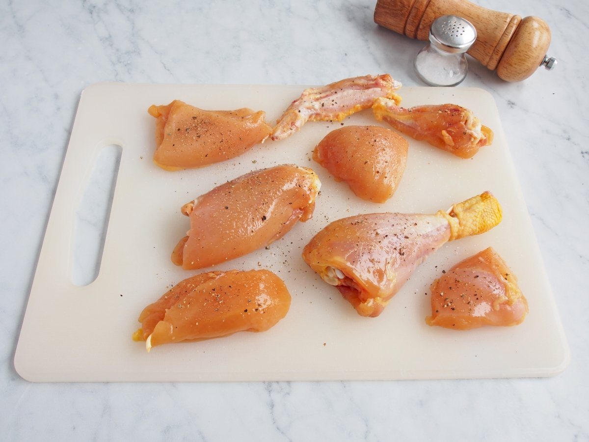
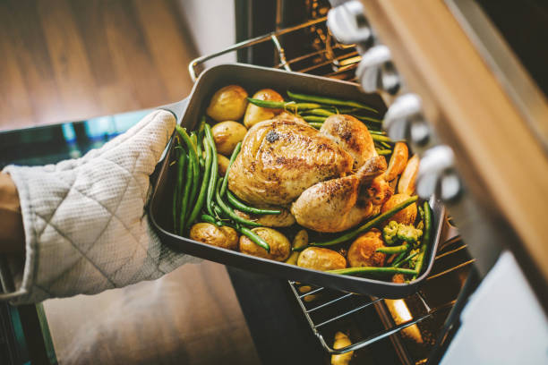

Lo primero sera pelar y cortar las patatas a rodajas y ponerlas en la base de la bandeja.
Cortar el resto de verduras y añadirlo por encima de las patatas
Ahora salpimentamos el pollo y lo ponemos encima de todas las verduras
Despues echamos el acite por encima y el medio vaso de vino
Ahora precalentamos el horno a 180 grados y metemos el pollo unos 45/50 minutos
